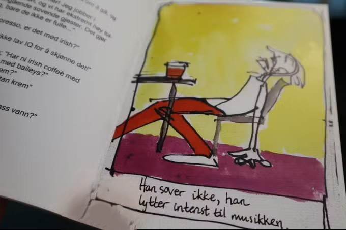
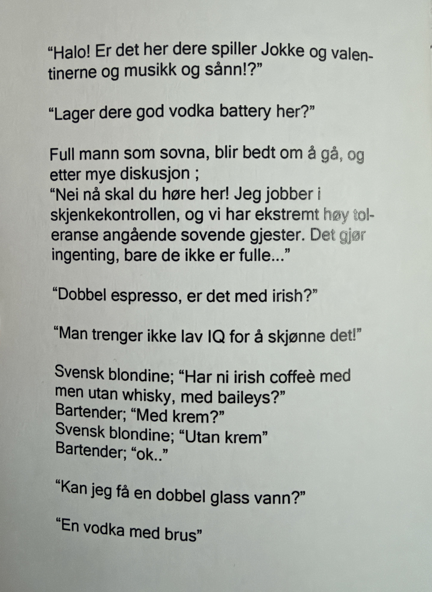
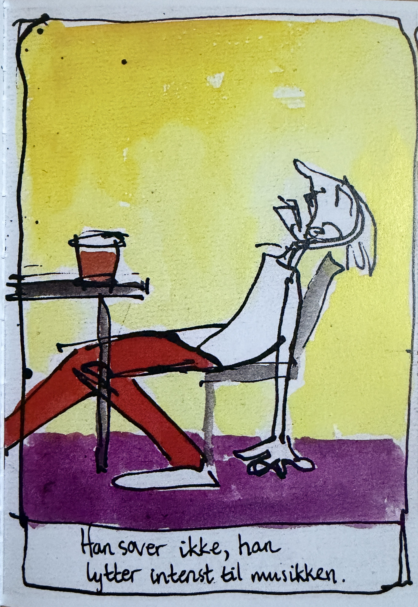
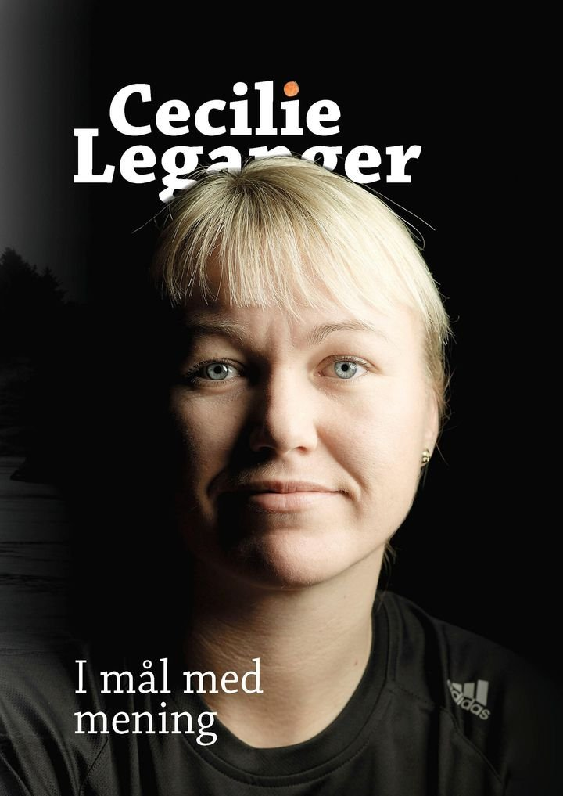
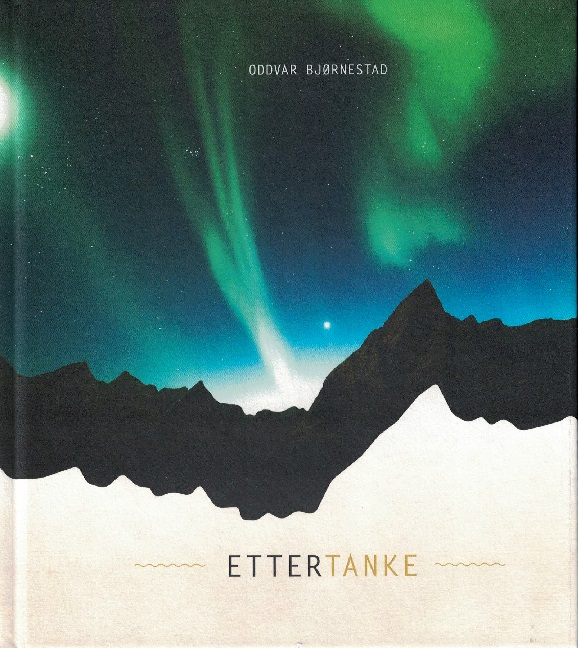

Gullkorn fra Fiasco
Cafe Fiasco, 2020.
Pias illustrasjoner løfter fram stemningen, karakterene og de små detaljene i en fortelling. Målet er å skape bilder som spiller sammen med teksten, men som også forteller noe på egen hånd. Her vises et utvalg.
Utgitt eksklusivt for Café Fiasco · 2020
Boka er en samling av rare, morsomme og minneverdige sitater og gullkorn fra gjestene på Café Fiasco, hvor Pia jobbet som bartender på 2000-tallet.
Sitatene ble både skriblet ned i en notatblokk bak baren og skrevet ned i etterkant.

Cafe Fiasco, 2020.

Cafe Fiasco, 2020.

Cafe Fiasco, 2020.
Selvutgitt, 2020.
Samarbeid med Åse Marie Hveem.
Boken er en fortsettelse av temaet over, med et humoristisk syn på ulike grunner folk gir for å ta seg en (til) øl.
Forlaget Nye Livskrefter, 2016.
Selvbiografi av Cecilie Leganger.
Boken handler om Legangers liv og karriere, med utgangspunkt i da hun som 18-åring
ble kåret til verdens beste målvakt under VM på hjemmebane i 1993 og hvordan det preget henne videre.

Forlaget Nye Livskrefter, 2016.
Forlaget Nye Livskrefter, 2016.
Forlaget Nye Livskrefter, 2016.
av Oddvar Bjørnestad · 2015
Boken består av korte, tankevekkende tekster supplert med fotografier som er ment å utfordre leseren til videre
refleksjon over livet og mellommenneskelige relasjoner.

Forlaget Nye Livskrefter, 2015.

Forlaget Nye Livskrefter, 2015.

Forlaget Nye Livskrefter, 2015.